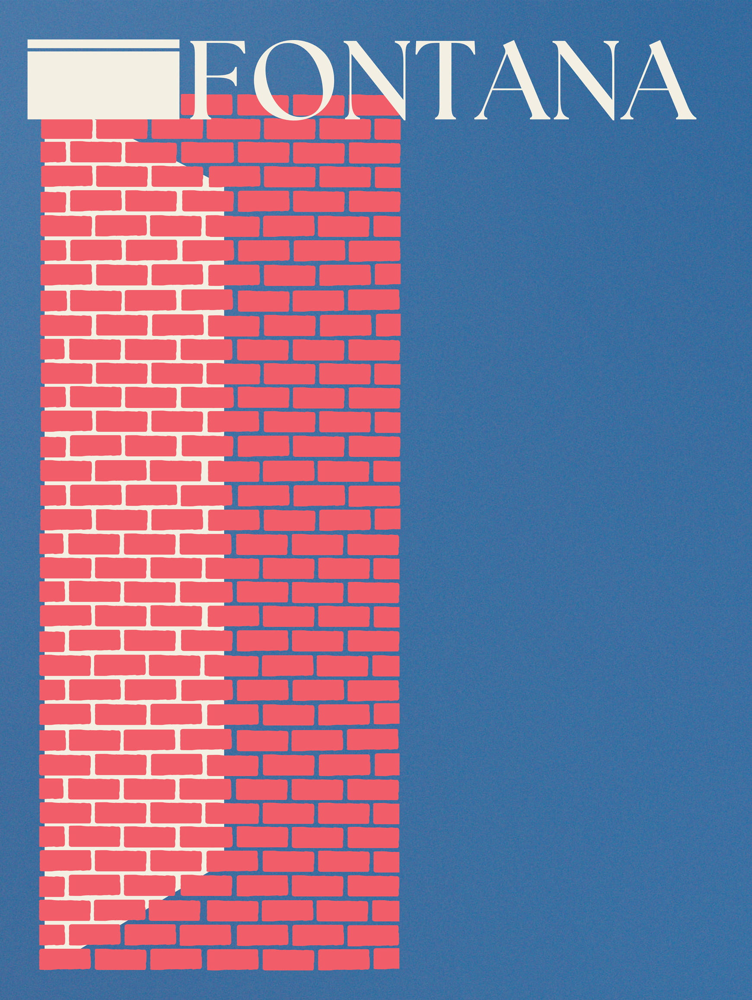
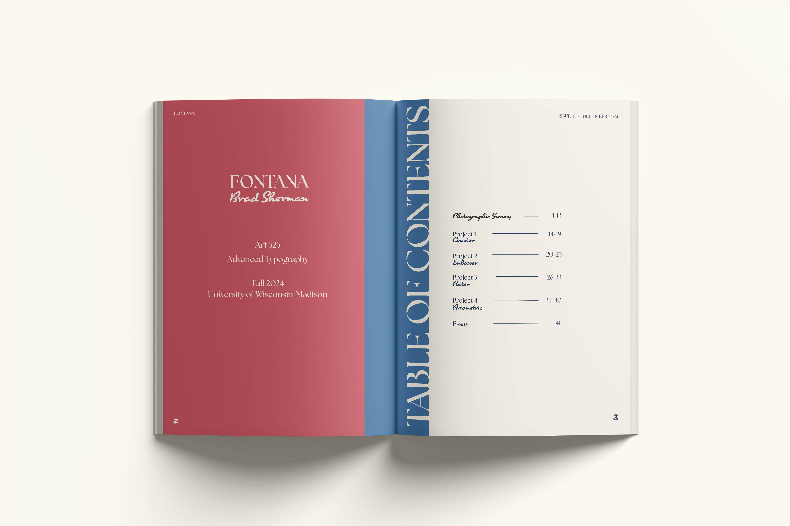
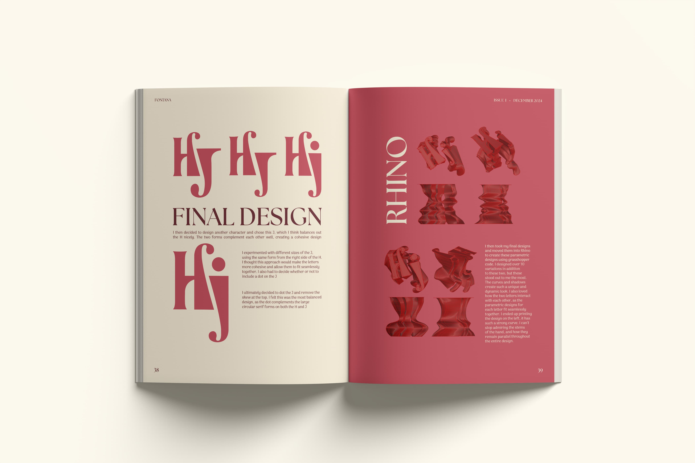
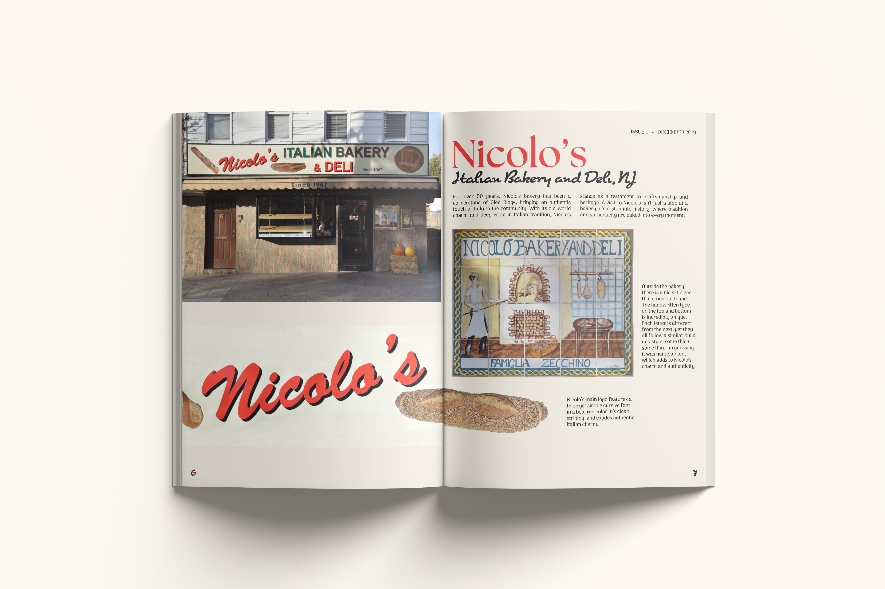
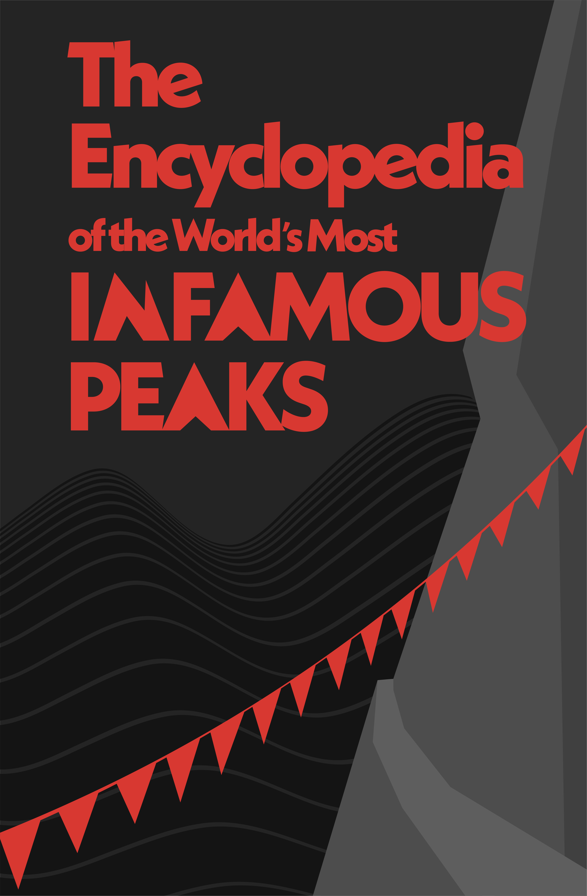
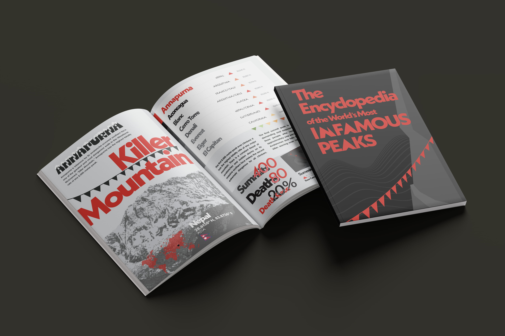
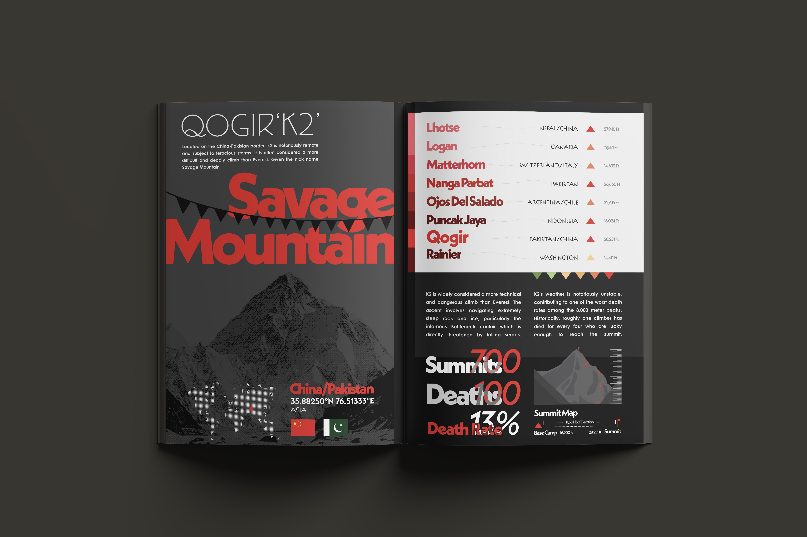

Magazines
Magazine layout and design.
Fontana
A typography magazine documenting Italian-American typography — from hand-painted signage to digital type design. The publication explores how Italian typographic traditions evolved after crossing the Atlantic, featuring original photography, historical research, and detailed type specimens.
Open Magazine →




Mini Encyclopedia
A pocket-sized booklet exploring the world's most dangerous mountain peaks. The publication combines data visualization, dramatic photography, and tight editorial layout to present geographic and climbing data in a compact, engaging format.


